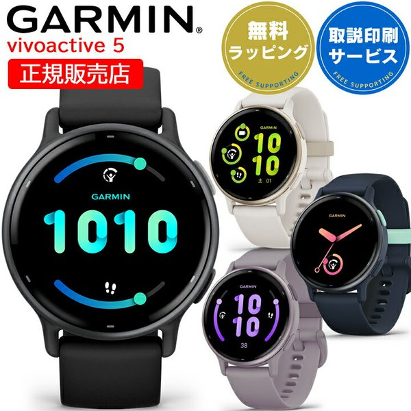
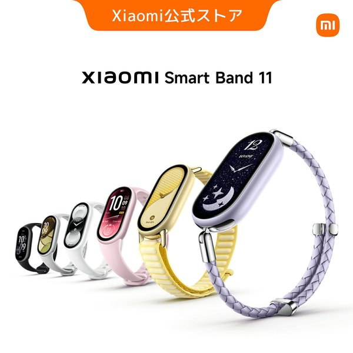
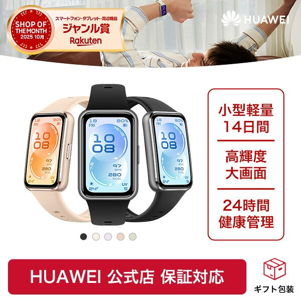
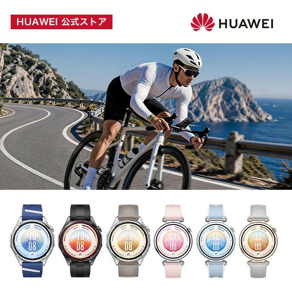
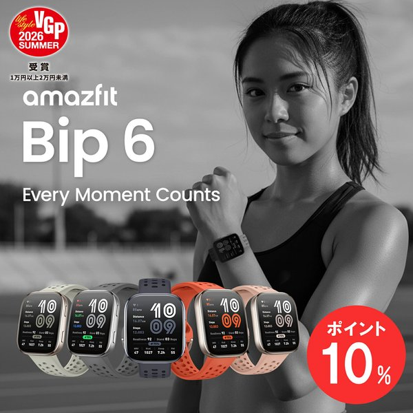
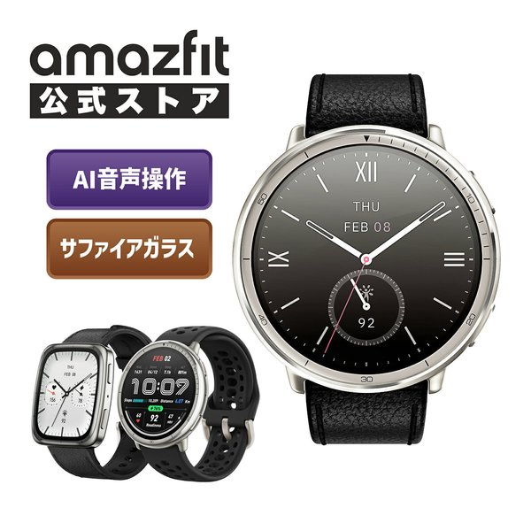
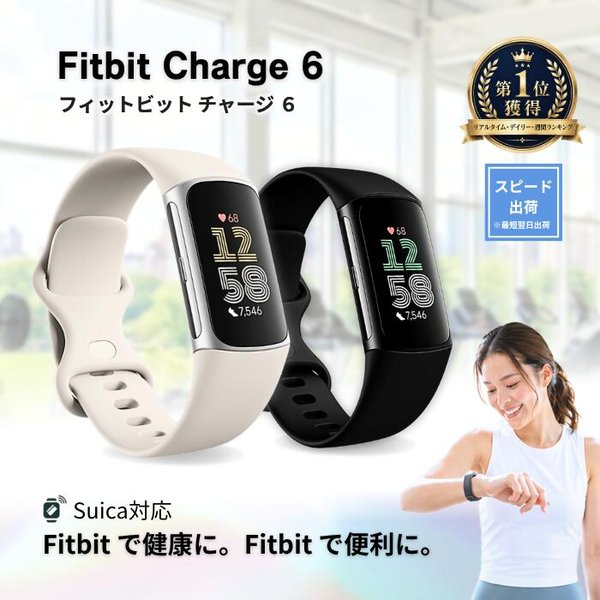
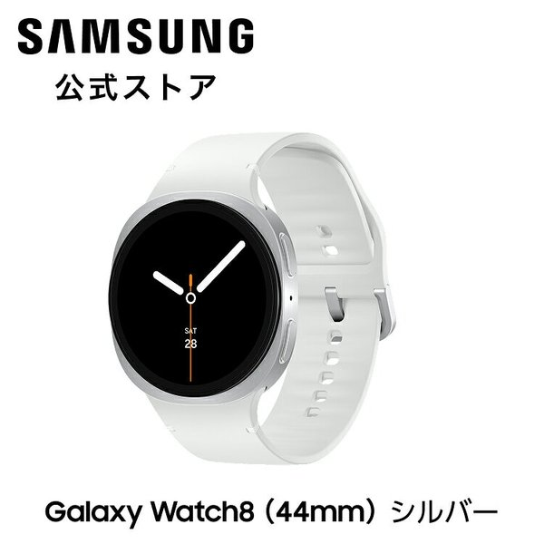
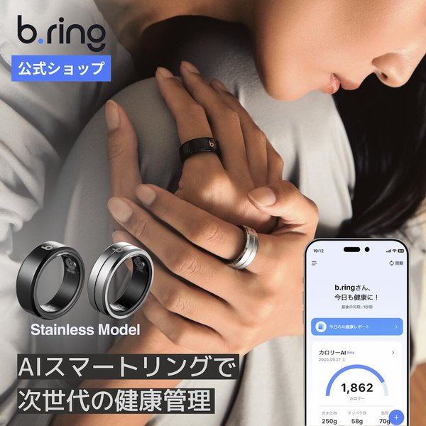

【2026年最新】睡眠も改札も手首で完結！Suica対応スマートウォッチ・健康管理ウェアラブルおすすめ10選
睡眠の記録も、スマホの通知も、駅の改札も、手首で済ませられるようになりました。腕時計を1本替えるだけで、毎日触る回数がはっきり変わる道具です。
選ぶ軸は3つ。何を記録したいか、Suicaなどの決済を使うか、そして何日充電せずに使えるかです。睡眠と心拍を見たいだけなら、バンド型の5,000〜8,000円台で十分。改札を通りたいならApple Watch、Fitbit Charge 6、Galaxy Watch8のように決済機能のあるモデルを選びます。ランニングやサイクリングで地図を使うなら、GPSとオフラインマップ付きのGarminやAmazfitが向いています。画面の大きさと重さは、着けたまま眠れるかどうかに直結するので、睡眠を測りたい人は軽さを優先してください。
本記事では、楽天市場で人気・高評価のスマートウォッチ・健康管理ウェアラブル10選を、実売価格とレビュー評価つきで写真付き紹介します。
- おすすめ10選 スペック・特徴比較表
- BEST 1｜Apple Watch SE（第3世代）40mm GPSモデル（アルミニウムケース）
- BEST 2｜GARMIN vivoactive 5（GPSスマートウォッチ・Suica対応）
- BEST 3｜Xiaomi Smart Band 11（1.72インチAMOLED・睡眠モニタリング）
- BEST 4｜HUAWEI Band 11（1.62インチ・24時間睡眠管理）
- BEST 5｜HUAWEI WATCH GT 7（GPS・21日バッテリー）
- BEST 6｜Amazfit Bip 6（GPS・通話機能・家族機能）
- BEST 7｜Amazfit Active 2 Round 44mm（GPS・オフラインマップ）
- BEST 8｜Fitbit Charge 6（Suica対応・GPS内蔵）
- BEST 9｜Galaxy Watch8 40mm／44mm（FeliCa対応・IP68）
- BEST 10｜b.ring スマートリング G1 ステンレスモデル
- 【読者負担0円】買わなくても得する無料サービス
- まとめ：スマートウォッチ・健康管理ウェアラブル10選の選び方
| 順位 | 商品名 | ブランド | 最大の特徴・おすすめ理由 | 総合評価 |
|---|---|---|---|---|
| BEST 1 | Apple Watch SE（第3世代）40mm GPSモデル（アルミニウムケース） | Apple（アップル） | iPhoneの通知・Suica・健康記録を1台でまとめられる | 4.92 |
| BEST 2 | GARMIN vivoactive 5（GPSスマートウォッチ・Suica対応） | GARMIN（ガーミン） | Suica・通知・睡眠スコアをまとめて確認できる | 4.59 |
| BEST 3 | Xiaomi Smart Band 11（1.72インチAMOLED・睡眠モニタリング） | Xiaomi（シャオミ） | 有機EL画面と21日バッテリーで7,000円を切る | 4.43 |
| BEST 4 | HUAWEI Band 11（1.62インチ・24時間睡眠管理） | HUAWEI（ファーウェイ） | レビュー6,044件の定番で、初めてでも失敗しにくい | 4.50 |
| BEST 5 | HUAWEI WATCH GT 7（GPS・21日バッテリー） | HUAWEI（ファーウェイ） | 最長21日で充電の頻度を減らせる | 4.66 |
| BEST 6 | Amazfit Bip 6（GPS・通話機能・家族機能） | Amazfit（アマズフィット） | 時計単体で通話ができる | 4.58 |
| BEST 7 | Amazfit Active 2 Round 44mm（GPS・オフラインマップ） | Amazfit（アマズフィット） | オフラインマップでコースを時計だけで辿れる | 4.52 |
| BEST 8 | Fitbit Charge 6（Suica対応・GPS内蔵） | Fitbit（フィットビット） | バンド型でSuicaが使える | 4.51 |
| BEST 9 | Galaxy Watch8 40mm／44mm（FeliCa対応・IP68） | Samsung（サムスン） | FeliCa対応でSuicaが使える | 4.53 |
| BEST 10 | b.ring スマートリング G1 ステンレスモデル | b.ring（ビーリング） | 指輪型で寝るときも邪魔にならない | 4.30 |
Apple Watch SE（第3世代）40mm GPSモデル（アルミニウムケース）

iPhoneと組めば、通知・心拍数・睡眠・アクティビティの記録が手元で完結します。Apple PayのSuicaを入れておけば、改札もコンビニの支払いも手首で済みます。40mmは手首の細い人でも邪魔になりにくく、SEはシリーズ上位モデルより安く始められるのが特徴です。出品は新品未開封の未使用品が中心で、レビューは25件・評価4.92。商品自体の口コミは出品ごとに分かれるので、保証と付属品の記載を確認してから買うのが安心です。楽天市場での実売価格は約41,000円（2026年11月時点）。
- iPhoneの通知・Suica・健康記録を1台でまとめられる
- 40mmで手首に馴染み、寝るときも着けたままでいやすい
- 出品の評価は4.92（レビュー25件）
- レビュー25件と少なめ。出品ごとに保証内容が違うので、購入前に販売店の記載を確認する
GARMIN vivoactive 5（GPSスマートウォッチ・Suica対応）

丸いAMOLED画面に、睡眠スコアや体力残量（Body Battery）を表示するGPSウォッチ。スマホの通知も受け取れ、Suicaにも対応するので、ランニングのときも財布を持たずに出られます。バッテリーはスマートウォッチモードで最長11日。Garminはスポーツ向けの印象が強いですが、この機種は日常使いのバランス型で、レビュー59件・評価4.59と評価は安定しています。楽天市場での実売価格は約27,064円（2026年11月時点）。
- Suica・通知・睡眠スコアをまとめて確認できる
- 最長11日持つバッテリー
- 評価4.59（レビュー59件）
- アプリを足して機能を増やすタイプではないので、できることは決まっている
Xiaomi Smart Band 11（1.72インチAMOLED・睡眠モニタリング）

細いバンド型で、1.72インチの有機EL画面を搭載。睡眠・心拍・血中酸素・ストレスを24時間記録し、150種類以上のスポーツモードが付きます。5ATM防水なので、シャワーや水仕事のときも外さずに済みます。バッテリーは最長21日。レビュー829件・評価4.43と口コミが多く、7,000円を切る価格で健康管理を始めたい人の最初の1本に向いています。楽天市場での実売価格は約6,980円（2026年11月時点）。
- 有機EL画面と21日バッテリーで7,000円を切る
- 睡眠・心拍・血中酸素・ストレスを24時間記録
- レビュー829件・評価4.43
- Suicaなどの決済機能はないので、改札はスマホかカードに任せる
HUAWEI Band 11（1.62インチ・24時間睡眠管理）

厚さ8.99mm・重さ17gの薄型バンド。1.62インチの画面は明るさ1500nitsで、日中の外でも時刻が見えます。睡眠の記録に力を入れていて、24時間の睡眠管理と情緒モニタリングが付きます。LINEの通知も受け取れ、バッテリーは最長14日。レビュー6,044件・評価4.50と、この価格帯では群を抜いて口コミが多い定番です。楽天市場での実売価格は約6,744円（2026年11月時点）。
- レビュー6,044件の定番で、初めてでも失敗しにくい
- 17gの軽さで寝るときも気にならない
- 14日間持つバッテリー
- Suicaには対応していない
HUAWEI WATCH GT 7（GPS・21日バッテリー）

1.47インチ、3000nitsの明るい画面を載せたGPSウォッチ。100種類以上のスポーツモードに加え、ゴルフのナビやスキーの記録まで入っています。バッテリーは最長21日で、充電の頻度を減らしたい人に向きます。iPhone・Androidどちらとも組め、LINEや着信の通知も受け取れます。レビュー731件・評価4.66と、大型モデルとしては満足度が高い部類です。楽天市場での実売価格は約37,800円（2026年11月時点）。
- 最長21日で充電の頻度を減らせる
- 3000nitsの画面で屋外でも見やすい
- レビュー731件・評価4.66
- 46mmの大型ケースなので、手首の細い人には大きく感じる
Amazfit Bip 6（GPS・通話機能・家族機能）

画面の大きなGPSウォッチで、Bluetooth通話と音声操作に対応します。スマホを出さずに時計から電話に出られ、家族の健康状態を見守る「家族機能」も付いています。血中酸素・睡眠・ストレスの記録と、LINE・着信の通知はひととおり。レビュー173件・評価4.58で、1万円台で通話まで使えるモデルとしては満足度が高めです。楽天市場での実売価格は約15,800円（2026年11月時点）。
- 時計単体で通話ができる
- 家族機能で家族の体調を見守れる
- 評価4.58（レビュー173件）
- Suicaには対応していない
Amazfit Active 2 Round 44mm（GPS・オフラインマップ）

丸い44mmケースに、2000nitの明るい画面とGPSを載せたモデル。オフラインマップとルートの取り込みに対応するので、ランニングやサイクリングのコースを時計だけで辿れます。心拍・睡眠・ストレスの記録は24時間、バッテリーは最長10日。レビュー77件・評価4.52。2万円台で地図まで使えるのは、この価格帯では珍しい構成です。楽天市場での実売価格は約21,890円（2026年11月時点）。
- オフラインマップでコースを時計だけで辿れる
- 2000nitの明るい画面とGPS内蔵
- 評価4.52（レビュー77件）
- Suicaなどの決済機能はない
Fitbit Charge 6（Suica対応・GPS内蔵）

バンド型でSuicaに対応し、GPSも内蔵したモデル。心拍と睡眠スコアを記録し、Googleのサービスと連携して、YouTube Musicの操作やGoogleマップの案内を手元で受けられます。バッテリーは最大7日。レビュー311件・評価4.51で、バンド型で決済まで済ませたい人には数少ない選択肢です。楽天市場での実売価格は約20,880円（2026年11月時点）。
- バンド型でSuicaが使える
- GPS内蔵でスマホなしでも距離を記録できる
- 評価4.51（レビュー311件）
- 画面は小さめなので、地図や長い通知はスマホのほうが見やすい
Galaxy Watch8 40mm／44mm（FeliCa対応・IP68）

40mmと44mmから選べるGalaxyのスマートウォッチ。FeliCaに対応しているので、おサイフケータイのSuicaを入れて改札を通れます。IP68の防水防塵に、Dual GPSと通話機能を備え、Androidスマホと組ませると通知の返信まで時計で完結します。発売からの日が浅く、レビューは15件・評価4.53。口コミはこれから増える段階なので、実機の情報をよく見て判断したい機種です。楽天市場での実売価格は約62,900円（2026年11月時点）。
- FeliCa対応でSuicaが使える
- IP68の防水防塵とDual GPS
- 40mmと44mmからサイズを選べる
- レビュー15件と少なく、口コミはこれから増える段階
b.ring スマートリング G1 ステンレスモデル

指にはめるだけのスマートリング。時計のように手首を締め付けず、寝るときも着けたまま睡眠・心拍・歩数を記録できます。専用アプリでAppleヘルスケアやGoogle Fitとも連携でき、バッテリーは最大7日。IP68の防水で、US7〜11号からサイズを選べます。レビュー103件・評価4.30。8,800円で睡眠の記録だけを始めたい人の選択肢になります。楽天市場での実売価格は約8,800円（2026年11月時点）。
- 指輪型で寝るときも邪魔にならない
- Appleヘルスケア・Google Fitと連携できる
- 8,800円で始められる
- 画面がないので、時刻や通知はスマホか時計で確認する
この記事の商品を買う前に、まずは無料で得する選択肢をチェック。どれも登録・利用は0円で、無料期間中に解約すれば料金はかかりません。読みたい雑誌がある人、ポイントを貯めたい人、アンケートなら気軽という人、それぞれに合うものを選べます。
初回31日無料・無料期間中に解約すれば0円 → 楽天ポイントモール｜登録無料で毎日ポイ活
買い物なしでもポイントが貯まる無料サービス → 楽天インサイト｜アンケートに答えてポイント
登録無料・すきま時間のアンケートで貯まる → 楽天カード｜年会費永年無料
新規発行・年会費ずっと0円 →
4つのサービスの違いと使い分けは「出費0円で得する！買わずにポイントが貯まる無料サービス厳選4選」でまとめています。
💡 まとめ：スマートウォッチ・健康管理ウェアラブル10選の選び方
ウェアラブルは、記録したい項目を1つ決めてから選ぶと、着け続けられます。睡眠と心拍を見たいだけなら、軽いバンド型のXiaomi Smart Band 11やHUAWEI Band 11で十分です。改札や支払いまで手首で済ませたいなら、Suica対応のApple Watch SE、Fitbit Charge 6、Galaxy Watch8が候補になります。運動の距離と地図を使うなら、GarminやAmazfitのGPSモデルを選んでください。どの機種も、画面が大きいほど見やすい反面、重さとバッテリーの持ちが犠牲になります。寝るときも着ける前提なら、軽さとバンドの素材を先に確認しておくと、途中で着けなくなるのを防げます。
楽天市場では「5と0のつく日」や「お買い物マラソン」などのキャンペーンに合わせて購入すると、ポイント還元が最大化してお得に手に入ります。ぜひチェックしてみてくださいね。